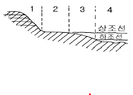

해양조사산업기사 (2003-05-25 기출문제)
1과목: 물리해양학
1. 현장밀도에 관한 설명 중 옳은 것은?
- 해수를 떠올렸을 때 그 때의 염분과 수온, 수압에 따른 밀도
- 해수를 떠올렸을 때 염분과 관계없이 수압과 수온에 따른 밀도
- 해수를 떠올렸을 때 염분과는 관계없이 수온과 기압에 따르는 밀도
- 해수를 떠올렸을 때의 선상조건 하에서의 밀도
(정답률: 79%)

2. 우리나라 근해의 해류가 아닌 것은?
- 쓰가루 난류(Tsugaru warm current)
- 쓰시마 해류(Tsushima current)
- 동한 난류(東韓暖流)
- 북한 한류(北韓寒流)
(정답률: 80%)
3. 아열대에서는 어느 대양에서도 그 서안 가까이를 따뜻한 열대수가 흐르고 있다. 그 흐름의 방향은?
- 극방향
- 반시계방향
- 적도방향
- 동쪽 또는 서쪽방향
(정답률: 63%)
4. 다음 중 편서풍이 일으키는 해류는?
- 적도
- 만류(gulf stream)
- 북태평양 해류
- 흑조(kuroshio)
(정답률: 57%)
5. 해파에 의해서 발생되는 해류가 아닌 것은?
- 파송류
- 연안류
- 이안류
- 경사류
(정답률: 69%)
6. 해수 중 염분 35‰ 일 때 빙점이 -1.91℃이다. 염분 24.7‰ 해수에서는 몇 ℃에서 얼기 시작하는가?
- -1.91℃
- -1.33℃
- 0℃
- 1.33℃
(정답률: 78%)
7. 다음 크롬웰 해류(cromwell current)에 관한 설명 중 틀린 것은?
- 북적도 해류 바로 밑에서 서향하며 흐르는 저층류이다.
- 그 두께는 약 200m이고 폭은 약 300km 이다.
- 북위 2° 에서 남위 2° 에 걸쳐 나타난다.
- 유속은 축에 있어서 최고 약 15cm/sec에 이른다.
(정답률: 59%)
8. 달과 태양은 조석현상을 일으키는데 가장 큰 영향을 가지고 있다. 달과 태양의 영향력 비율(달:태양)은?
- 4 : 9
- 9 : 4
- 2 : 3
- 3 : 2
(정답률: 79%)
9. 해양에서 저층수의 일차적인 근원은?
- 태평양
- 인도양
- 지중해
- 남극해
(정답률: 81%)
10. 다음은 서안류와 동안류의 특징을 비교 설명한 것이다. 잘못된 것은?
- 동안류는 연안류와의 경계가 분명치 않다.
- 동안류의 폭과 두께는 넓고 얇은데 서안류는 그 반대다.
- 동안류는 대개 난류이고 서안류는 한류이다.
- 동안류의 유속은 느린데 서안류는 강하다.
(정답률: 76%)
11. 다음 중 심층(深層)에서 해류를 측정하기에 알맞은 기구는?
- 에크만 멜츠유속계
- G.E.K
- 해류판
- Swallow의 중립부표
(정답률: 48%)
12. 다음 중 해일(Tsunami)의 원인이 아닌 것은?
- 폭풍
- 해저지진
- 해저화산
- 홍수
(정답률: 82%)
13. 다른 조건이 동일할 경우 에크만 수심(Ekman depth)과 위도(Latitude)와의 관계는?
- 위도가 높을수록 깊어진다.
- 위도가 낮을수록 깊어진다.
- 남.북위 45도에서 가장 깊다.
- 위도와는 상관 없다.
(정답률: 60%)
14. 다음 해수 중에서 소리의 전파속도에 관한 설명 중 옳은 것은?
- 수온이 증가할수록 빨라진다.
- 수심이 깊어질수록 늦어진다.
- 염분이 감소할수록 빨라진다.
- 수온, 수심 및 염분과는 관계 없다.
(정답률: 70%)
15. 해면 단위 면적당 파랑에너지는?
- 파장의 제곱에 비례한다.
- 파고의 제곱에 비례한다.
- 주기의 제곱에 비례한다.
- 군속도의 제곱에 비례한다.
(정답률: 73%)
16. 다음 중 직접 해류 측정이 가능한 기기는?
- ADCP
- CTD
- NOAA-11
- Echo-Sounder
(정답률: 72%)
17. 다음 중 대륙붕파(continental shelf wave)와 가장 관계가 깊은 것은?
- 밀도변화
- 수심변화
- 수온변화
- 염분변화
(정답률: 59%)
18. 어떤 해역에서 태양에 의한 조차가 1m, 달에 의한 조차가 2m라면 이 때 대조차는 소조차의 몇 배인가?
- 1.5배
- 2배
- 2.5배
- 3배
(정답률: 70%)
19. 심층수가 가장 많이 형성되는 계절은?
- 봄
- 여름
- 가을
- 겨울
(정답률: 69%)
20. 다음은 태평양과 대서양간 수괴의 차이를 비교하고 있다. 올바른 것은?
- 태평양의 수온이 대서양보다 높다.
- 태평양의 수온이 대서양과 같다.
- 태평양의 염분이 대서양보다 낮다.
- 태평양의 수온과 염분이 대서양과 같다.
(정답률: 75%)
2과목: 화학해양학
21. 해수의 화학적 성분 중 미량금속 분석에 일반적인 방법으로 많이 사용되는 것은?
- 원자흡광 분광광도계
- 동위원소 희석질량분석법
- 형광 X 선법
- 용출 전압전류법
(정답률: 66%)
22. 해수의 표면장력은 다음 어느 경우에 상승하는가?
- 염분이 감소될 때
- 온도가 강하될 때
- 수소결합이 감소할 때
- 영양염류가 증가할 때
(정답률: 54%)
23. 해양에서 생물체에 축적되어 있는 Hg는 보통 어떤 형태인가?
- 알킬수은
- 수은증기
- 무기수은
- 콜로이드 상태
(정답률: 59%)
24. 산화-환원과정에 따라 해수중 화학적 성질이 현저하게 달라지는 원소는?
- Cr
- Th
- Al
- Ru
(정답률: 60%)
25. 해수중의 질소화합물의 공급원이 아닌 것은?
- 해산동물 사체의 부패분해
- 하천수의 유입
- 식물성 플랑크톤의 번식
- 질소고정 박테리아의 작용
(정답률: 49%)
26. 대양에서의 pH의 평균값은 얼마인가?
- 2.5
- 4.9
- 8.1
- 10.5
(정답률: 80%)
27. 외양역에 있어서 용존산소의 전형적인 수직농도분포 특성에 대한 설명 중 옳은 것은?
- 용존산소는 표층부근에서 높고, 수심이 깊어질 수록 계속적으로 감소한다.
- 용존산소 극소층은 수온약층 상부에 존재한다.
- 중층에서 보다 광합성층에서 용존산소 농도가 낮아진다.
- 용존산소 극소층은 수온약층 바로 아래 수층에 존재한다.
(정답률: 64%)
28. 해양에서의 산화, 환원환경에 대한 설명이 잘못된 것은?
- 산화와 환원조건은 해양에서의 산소의 존재여부에 따라 나누어진다.
- 해양의 대부분은 산화환경이 지배한다.
- 외해와의 연결이 차단된 바다의 심층에서는 환원환경이 지배한다.
- 국부적으로 산화와 환원환경의 중간에 해당하는 환경은 있을 수 없다.
(정답률: 62%)
29. 해양에서 탄산염 침전에 영향을 주는 요인이 아닌 것은?
- 수온
- 압력
- 밀도
- 탄산염의 농도
(정답률: 62%)
30. 부식물질(Humic substance)에 의한 유기금속 착화물 형성에 대한 설명 중 틀린 것은?
- 원양역보다 기수역에서 많이 일어난다.
- 생물에 대한 독성을 줄인다.
- 생물에 필요한 금속의 흡수를 방해한다.
- 육상기원의 부식물질도 해수중에서 이와 같은 작용을 한다.
(정답률: 49%)
31. 방사성 물질은 해양수의 움직임 뿐만아니라 여러 가지 현상을 해명하는 수단으로 광범위하게 쓰이고 있다. 이때 방사성 핵종을 쓰는 잇점으로 적당치 않은 것은?
- 미량으로도 측정할 수 있기 때문에 수괴의 추적자로 이용된다.
- 오염의 영향이 적다.
- 존재량 측정만으로서 시간이나 변화속도가 결정될 수 있다.
- 방사성 핵종의 붕괴속도는 환경의 물리적, 화학적인 조건에 관계가 깊다.
(정답률: 50%)
32. 다음의 지역중 해수의 주요 원소 조성비가 달라질 수 있는 지역이 아닌 곳은?
- 하구역
- 대양역
- 고립된 분지
- 열수활동해역
(정답률: 74%)
33. 해수중에 존재하는 질소 중 규조류가 흡수하는 영양염류와 별로 관계가 없는 것은?
- NO3-N
- NH4+-N
- NO2--N
- 용존N2
(정답률: 56%)
34. 다음 중 해수중 용존 규산염을 흡수하여 규산염각(opal)을 형성하는 해양 생물은?
- 익족류
- 방산충류
- 유공층
- 편모조류
(정답률: 49%)
35. 해저저질(底質)속에 아황산 (SO32-)을 황화수소(H2S)로 바꿔 악취를 내게하는 것은?
- 유공충
- 황산염 박테리아
- 미소플랑크톤
- 코콜리스
(정답률: 82%)
36. 해수에 용해되어 있는 이온 중 그 양이 가장 많은 것은?
- Na+
- Cl-
- Ca++
- Br-
(정답률: 65%)
37. 해수중의 인산 측정법으로 몰리브덴 블루법을 이용하는데 이때 시료에 공존하는 규소의 영향은 어떠하겠는가?
- 인산의 과대 평가로 나타난다
- 인산의 과소 평가로 나타난다
- 영향이 없다.
- 인산의 극히 미소한 평가로 나타난다.
(정답률: 42%)
38. PCB(Poly Chlorinate Biphenyl)의 화학적 특성이 아닌 것은?
- 높은 안정성
- 수중에서의 높은 용해도
- 낮은 휘발성
- 높은 절연성
(정답률: 56%)
39. pH5인 해수를 pH7로 증가시키면 수소이온농도(H+)의 변화는?
- 2배증가
- 2배감소
- 100배증가
- 100배감소
(정답률: 58%)
40. 해양에서 많이 사용되는 핵종이다. 다음중 반감기가 짧은 것의 순서대로 나열된 것은?
- 7Be ＞ 234Th ＞ 210Po ＞ 228Ra
- 234Th ＞ 7Be ＞ 210Po ＞ 228Ra
- 7Be ＞ 234Th ＞ 228Ra ＞ 210Po
- 234Th ＞ 210Po ＞ 7Be ＞ 228Ra
(정답률: 59%)
3과목: 생물해양학
41. 어류의 크기를 나타내는 방법 중 표준체장은?
- 몸 앞끝에서 꼬리지느러미 뒤끝까지의 직선거리
- 주둥치 앞끝에서 꼬리지느러미 기저까지의 직선거리
- 주둥치 앞끝에서 꼬리지느러미의 오목한 안끝까지의 직선거리
- 주둥치 앞끝에서 등지느러미의 끝까지의 직선거리
(정답률: 71%)
42. 해양 생태계의 에너지 흐름에 있어 영양단계별 생태학적 효율은?
- 약 1 - 5%
- 약 10 - 20%
- 약 20 - 30%
- 약 30 - 40%
(정답률: 59%)
43. 다음 중 척색을 가지고 있으면서 생물진화 발달사에 많은 관심의 대상이 되는것은?
- 원구류
- 우렁쉥이
- 창고기류
- 뱀장어
(정답률: 52%)
44. 오직 바다에서만 서식하는 동물군은?
- 절지동물
- 강장동물
- 극피동물
- 해면동물
(정답률: 46%)
45. 필로소마(phyllosoma)란 유생기를 거치는 종류는?
- 젓새우
- 대하
- 철모새우
- 닭새우
(정답률: 54%)
46. 남극해의 먹이연쇄 중에서 가장 중요한 초식자는?
- 펭귄
- 아이스 피시(Ice fish)
- 크릴(krill)
- 대왕고래
(정답률: 80%)
47. 진광대(Euphotic zone)를 가장 잘 설명한 것은?
- 빛이 수중에 투과하는 최대 깊이의 층
- 광합성이 가장 많이 형성되는 수역
- 광합성이 가능한 광도의 빛이 있는 층
- 광합성에 의한 총생산량과 호흡에 의한 소비량이 일치하는 지역
(정답률: 62%)
48. 생식법으로서 세대교번 및 출아생식(出芽生殖)을 하는 동물은?
- 화살벌레(sagitta)
- 성게
- 우렁쉥이
- 하이드로수모류(Hydromedusae)
(정답률: 58%)
49. 다음 중 해양생물의 분포패턴에 관한 연구가 가장 활발한 곳은?
- 용승지역
- 근해지역
- 조간대
- 점심대
(정답률: 72%)
50. 다음 중 가장 협온성 및 협염성에 해당되는 생물은?
- 굴
- 바지락
- 전복
- 숭어
(정답률: 59%)
51. 다음 중 체내에 혈색소를 가지고 있는 종류는?
- 대합
- 바지락
- 고막
- 개조개
(정답률: 59%)
52. 다음 사항 중 용승류(Upwelling)가 일어나고 있는 해역의 특징이 아닌 것은?
- 영양염이 풍부하다.
- 수온이 낮다
- 기초생산이 크다.
- 수온약층이 강하게 생긴다.
(정답률: 74%)
53. 다음 갑각류 중 십각류가 아닌 것은?
- 풍년새우
- 보리새우
- 대하
- 꽃게
(정답률: 43%)
54. 수서생물(水棲生物)을 그 생활 양식에 따라 분류(생태적 구분)할 때 부적당한 표현은?
- 부유생물(Plankton)
- 원양생물(Deep sea life)
- 유영생물(Nekton)
- 저서생물(Benthos)
(정답률: 73%)
55. 다음 중 해양저질(底質)에 의해 제약을 가장 적게 받는 것은?
- 저어류
- 저서동물
- 해조류
- 식물플랑크톤
(정답률: 77%)
56. 온대지방에 있어서 식물성 플랑크톤이 가장 많이 번식하는 시기는?
- 겨울
- 봄
- 여름
- 가을
(정답률: 71%)
57. 해양 생태계에 있어서 먹이연쇄는 여러 가지 요인에 의거 나타난다. 다음 중 그 유형을 대별한 것 중 적합 하지 않는 것은?
- 초식먹이연쇄
- 부식먹이연쇄
- 기생먹이연쇄
- 질병먹이연쇄
(정답률: 62%)
58. 다음 중 원구류에 속하는 종류는?
- 뱀장어
- 먹장어
- 붕장어
- 갯장어
(정답률: 55%)
59. 해양의 식물성 플랑크톤 중 가장 흔한 것은?
- 규조류와 남조류
- 규조류와 편조류
- 편조류와 녹조류
- 편조류와 남조류
(정답률: 32%)
60. 다음 중 진골류에 속하는 어류는?
- 연골어류
- 경골어류
- 원구류
- 상어류
(정답률: 59%)
4과목: 지질해양학
61. 해빈사의 이동에 가장 큰 영향을 미치는 것은?
- 파랑
- 조석
- 연안류
- 해류
(정답률: 49%)
62. 일반적인 해저지형을 육지에서 바다쪽으로 나열한 것 중 옳게 된 것은?
- 대륙붕 → 상부대륙대 → 대륙사면 → 하부대륙대
- 대륙붕 → 대륙사면 → 대륙대 → 심해평원
- 대륙붕 → 상부대륙대 → 하부대륙대 → 심해평원
- 대륙사면 → 대륙대 → 대륙붕 → 심해평원
(정답률: 74%)
63. 장차 육지에서의 한정된 자원으로 고갈이 예상되는 사력 자원(모래, 자갈)은 해저 중 다음 어느 곳에서 가장 많이 분포하고 있는가?
- 대륙사면
- 대륙붕
- 대륙대
- 심해저
(정답률: 82%)
64. 다음 중 해양지각의 개략적인 두께는?
- 약 12km
- 약 5km
- 약 15km
- 약 20km
(정답률: 74%)
65. 대륙사면의 평균 기울기는 몇도 인가?
- 1° 이하
- 4°
- 10°
- 15°
(정답률: 82%)
66. 우울라이트(oolite) 퇴적물의 형성에 관한 설명 중 맞는 것은?
- 100m 수심의 해저에서 형성된다.
- 150m 수심의 해저에서 형성된다.
- 1,000m 수심의 해저에서 형성된다.
- 10m 이내의 수심에서 형성된다.
(정답률: 56%)
67. 현재 해저에서 생산되는 석유중 가장 많이 산출되는 지역은?
- 대륙사면
- 대륙붕
- 대륙대
- 심해저
(정답률: 75%)
68. 퇴적물 중에는 자갈 아닌 구형, 편두상, 불규칙상 등의 물체가 마치 자갈처럼 들어있는 것이 발견된다. 이들의 명칭은?
- 결핵체
- 포획체
- 화석
- 다이아스템
(정답률: 52%)
69. 대륙사면과 해안과의 관계에 있어서 일반적으로 경사도가 급한 대륙사면은?
- 삼각주와 큰강이 있는 해안 앞바다의 대륙사면
- 단층해안 앞바다의 대륙사면
- 유년기 산맥해안 앞바다의 대륙사면
- 큰강이 없고 안정된 해안 앞바다의 대륙사면
(정답률: 75%)
70. 전해양에서 가장 넓은 면적을 점유하고 있는 것은?
- 대륙붕
- 대륙사면
- 해구
- 대양저
(정답률: 81%)
71. 알코즈 퇴적물(arkose sediments)이 함유하는 장석(feldspar)의 함유량은?
- 5% 미만
- 10 ~ 15 %
- 15 ~ 20 %
- 25% 이상
(정답률: 52%)
72. 다음 중 저탁류에 의하여 운반 퇴적된 퇴적층은?
- 터어비다이트(turbidite)
- 위층
- 충적충
- 바르칸(barchan)
(정답률: 69%)
73. 다음 중 퇴적물의 퇴적속도가 가장 빠른 장소는?
- 하구
- 해협
- 내만
- 외양
(정답률: 78%)
74. 다음 광물 중 망간단괴에 함유되어 있지 않는 광물은?
- 망간
- 철
- 동
- 에메랄드
(정답률: 73%)
75. 해양 퇴적물의 근원을 가장 잘 반영 시켜주는 것은?
- 광물 성분
- 화학 성분
- 퇴적물의 구조
- 유기물의 함량
(정답률: 64%)
76. 다음 그림은 전형적인 해빈의 단면도이다. 그림에 표시된 부분에서 전안(foreshore)에 해당하는 곳은?

- 1
- 2
- 3
- 4
(정답률: 59%)
77. 지금까지 알려진 대륙붕의 평균수심은 다음 중 어느 것에 제일 가까운가?
- 35m
- 130m
- 200m
- 240m
(정답률: 67%)
78. 높은 산맥을 가지는 해안지역에 인접한 대륙붕은?
- 대단히 넓은 폭을 가진다.
- 비교적 넓은 폭을 가진다.
- 비교적 좁은 폭을 가진다.
- 거의 발달하지 않는다.
(정답률: 56%)
79. 다음의 연니(軟泥)에 대한 설명 중 가장 옳은 것은?
- 입자가 매우 작은 퇴적물을 연니라 한다.
- 원양성 퇴적물은 모두 연니라 한다.
- 원양성 퇴적물 중 산화작용을 받은 것을 연니라 한다.
- 원양성 퇴적물 중 생물유해가 다량 함유한 것을 연니라 한다.
(정답률: 69%)
80. 중광물의 집중 또는 퇴적입자의 현저한 입도차에 의해서 발달되는 주된 해빈 퇴적구조는?
- 층리
- 연흔(ripple)
- 스워시 마아크(swash mark)
- 해빈 소갑(beach cusps)
(정답률: 71%)